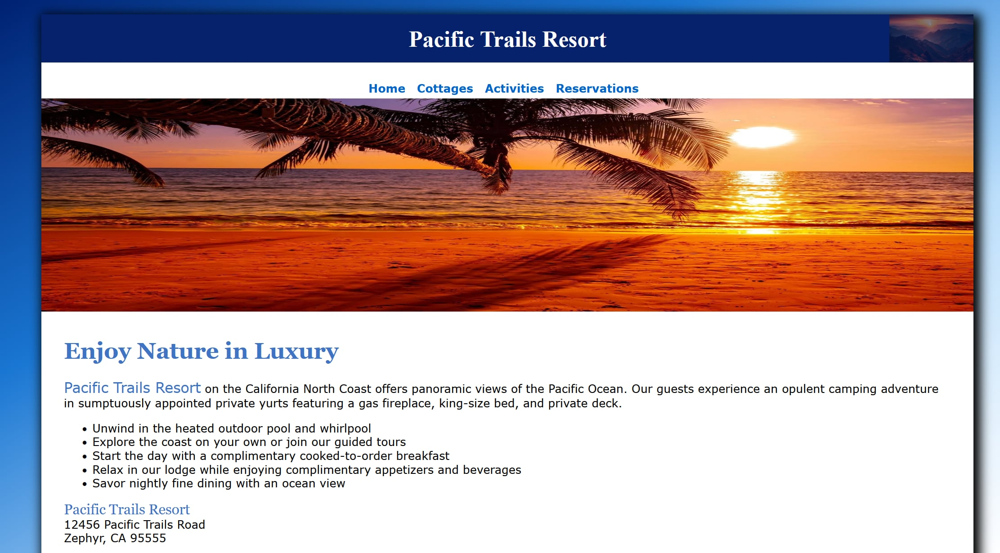
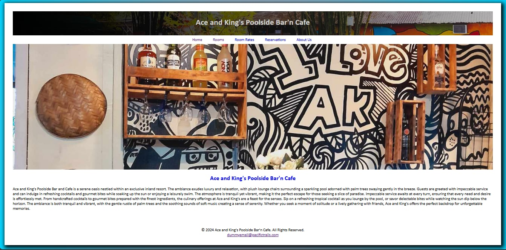
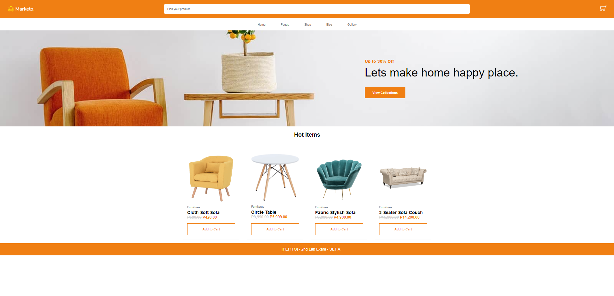
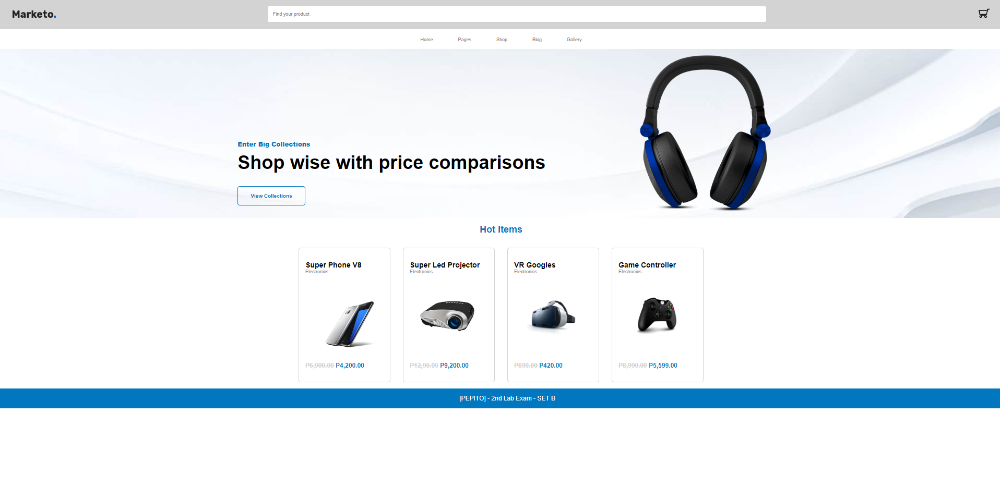
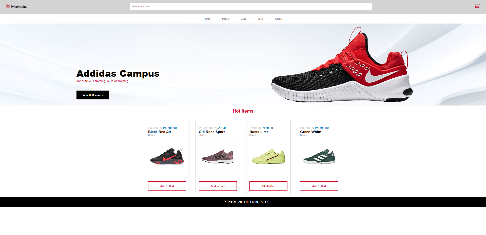

Pacific Trails Resort
Pacific Trails Resort is a tranquil getaway nestled along the picturesque coastline, offering guests a serene retreat surrounded by natural beauty. The resort features charming accommodations, including cozy cottages and spacious lodges, all designed to provide a comfortable and relaxing stay.

Ace and King's Poolside Bar n Cafe
Ace and King's Poolside Bar and Cafe is a serene oasis nestled within an exclusive inland resort. The
ambiance exudes luxury and relaxation, with plush lounge chairs surrounding a sparkling pool adorned
with palm trees swaying gently in the breeze. Guests are greeted with impeccable service and can indulge
in refreshing cocktails and gourmet bites while soaking up the sun or enjoying a leisurely swim.

Lab Exam Set A
Welcome to Marketo Furniture, your premier destination for high-quality, handcrafted furniture. Our website showcases a diverse collection of timeless pieces, from elegant dining sets and cozy living room sofas to stylish bedroom furnishings and functional office desks. Each item is meticulously crafted with attention to detail and made from the finest materials, ensuring durability and lasting beauty. Explore our easy-to-navigate online catalog, where you can find inspiration for every room in your home and enjoy seamless shopping with our secure checkout process. At Marketo Furniture, we are dedicated to helping you create spaces that reflect your unique style and bring comfort and elegance to your everyday life.

Lab Exam Set B
Marketo PC Peripherals offers a diverse selection of top-tier accessories to enhance your computing experience. From precision gaming mice to immersive audio solutions and ergonomic keyboards, Marketo provides the tools to elevate both gaming and productivity setups. With a focus on quality, innovation, and user comfort, Marketo PC Peripherals empowers users to optimize their workflow and gaming performance, delivering unparalleled immersion and control.

Lab Exam Set C
Marketo Shoe Store is a haven for footwear enthusiasts, offering a curated collection of stylish and comfortable shoes for every occasion. From sleek sneakers to classic loafers and rugged boots, Marketo caters to diverse tastes and preferences. With a dedication to quality craftsmanship and trendsetting designs, Marketo Shoe Store ensures that customers step out in confidence and style, whether they're hitting the streets or making a statement at work or play.
E-commerce Website
D' New West Tailor specializes in bespoke tailoring and precise alterations. Offering custom suits, dresses, and everyday apparel, they ensure a perfect fit and high-quality craftsmanship. With personalized service and attention to detail, D' New West Tailor helps you achieve impeccable style for any occasion.